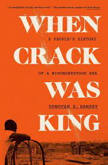

Crack cocaine emerged in the early 1980s in the United States.
It’s a crystalline form of cocaine that can be smoked,
providing a quick and intense high. Its origins trace back to cocaine,
which has been used for centuries.
Crack cocaine became popular due to its affordability and potency,
particularly in urban areas. Its rise coincided with the crack epidemic,
leading to widespread addiction, crime, and social issues.
